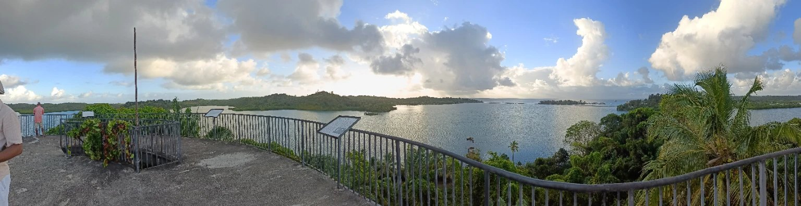
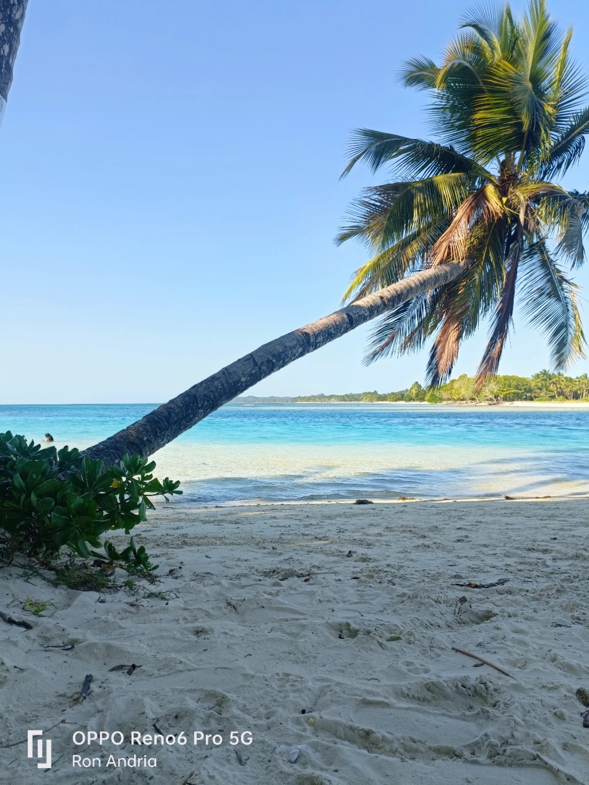
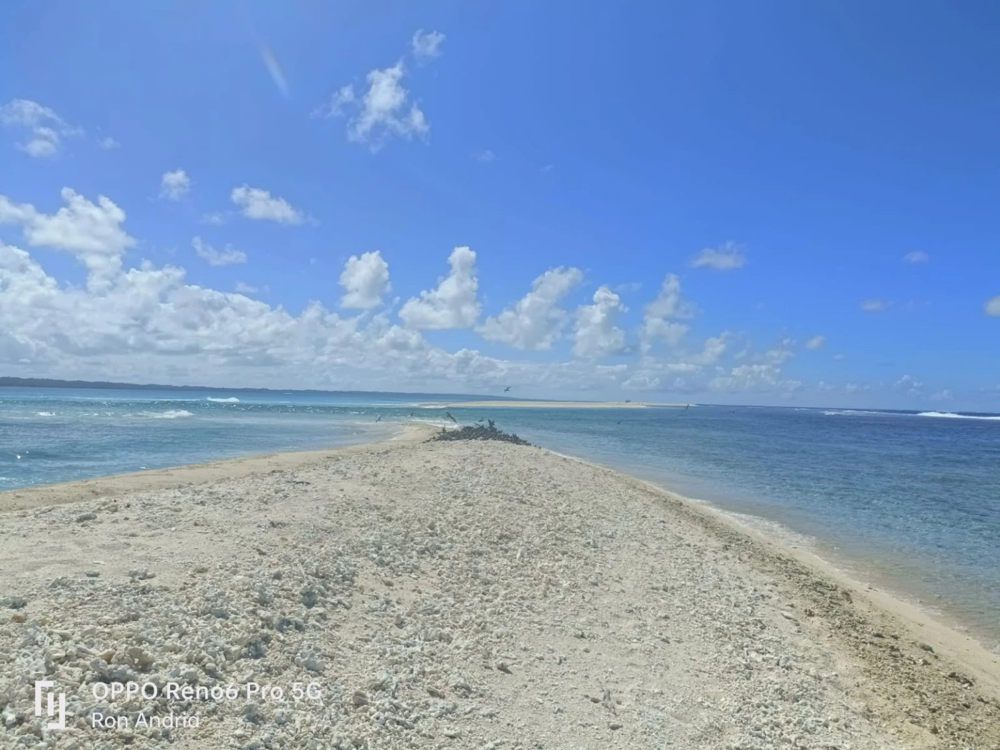
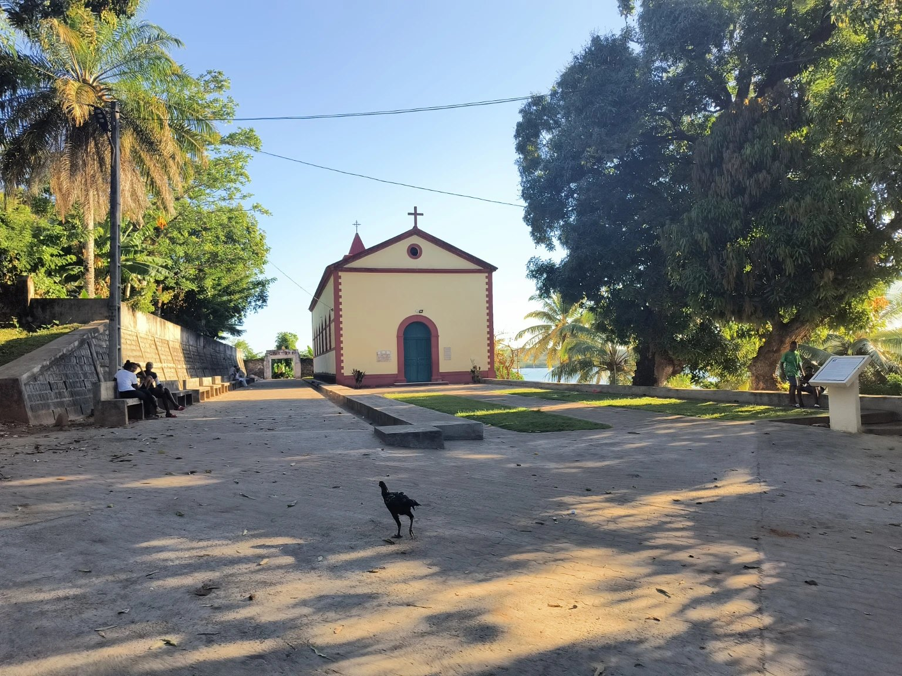

Île aux Forbans
Une escapade à la rencontre de l’histoire des pirates et du patrimoine de l’île.
Histoire & patrimoineDécouvrez l’Île aux Forbans, le canal de mangrove, la cascade d’Ankirihiry et les paysages de Sainte-Marie avec Nah Ranaivo. Profitez d’un accompagnement adapté à votre séjour.
Découvrir nos excursionsRéserverDes lieux naturels, des paysages marins et des sites historiques à explorer sur l’île.

Une escapade à la rencontre de l’histoire des pirates et du patrimoine de l’île.
Histoire & patrimoine
Une balade au fil de l’eau au cœur de la mangrove et de sa végétation.
Nature
Un moment de fraîcheur dans un cadre verdoyant, entre rochers et eau vive.
Nature
Un joli site côtier pour admirer l’eau turquoise et profiter du paysage.
Bord de mer
Plages de sable clair, cocotiers et eaux lumineuses pour une escapade insulaire.
Bord de mer
De petits bancs de sable entourés par les eaux de l’océan Indien.
Bord de mer
Un lieu associé aux récits de pirates et à l’histoire maritime de Sainte-Marie.
Histoire & patrimoine
Un point de vue ouvert sur la végétation de l’île et l’océan.
Point de vue
Un site patrimonial et historique à découvrir lors de votre visite.
Histoire & patrimoineUne étape à découvrir à Sainte-Marie. Photo du lieu à ajouter prochainement.
Découverte localeUn accompagnement local et des solutions de déplacement adaptées pour profiter pleinement de votre séjour à Sainte-Marie.
Nah Ranaivo est un organisateur local d’excursions à Sainte-Marie. Nous vous accompagnons dans la découverte des paysages, des sites naturels et du patrimoine de l’île, avec une approche adaptée à vos envies et à votre séjour.
Contactez Nah Ranaivo pour demander des informations et organiser votre découverte de Sainte-Marie.
Le contact WhatsApp et le formulaire de réservation seront ajoutés dès que vos coordonnées seront disponibles.